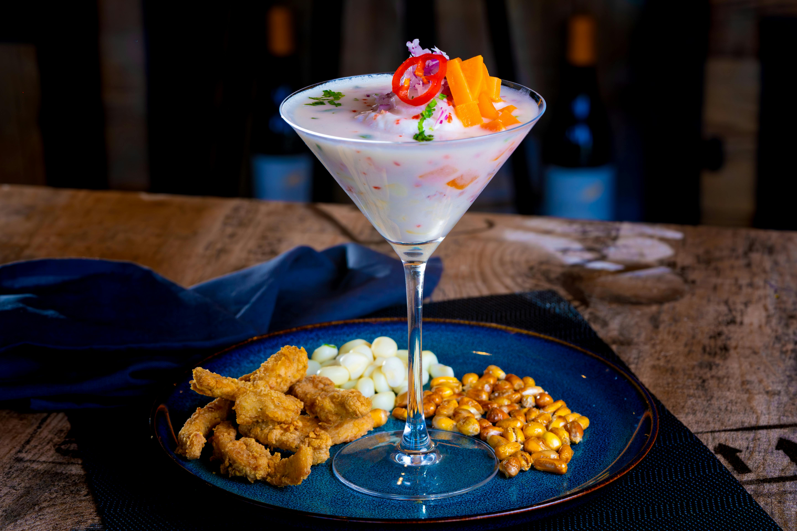

Gallery



Explore the beauty, culture, and cuisine of Peru
Peru is a country of incredible geographic diversity. It boasts the towering Andes Mountains, the lush Amazon Rainforest, and a rich coastline along the Pacific Ocean.Peru is the third largest country in South America, after Brazil and Argentina. It is made up of a variety of landscapes, from mountains and beaches to deserts and rain forests. Most people live along the coast of the Pacific Ocean, where the capital, Lima, is located.
Peru is the birthplace of the ancient Inca Empire. The culture is deeply rooted in indigenous traditions, Spanish colonial influence**, and Andean heritage. The country's traditions, art, music, and festivals are celebrated throughout the year.
Peruvian cuisine is famous for its diverse ingredients and flavors. Some popular dishes include: